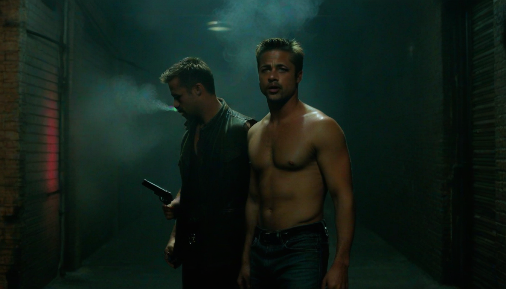

솔직히 까놓고 말해서, 나 같은 ‘형님’들한테 뭘 그리 어렵게 설명하냐 싶지만. 요즘 젊은 친구들, 특히 합정 쪽 클럽 룩북 좀 한다는 친구들 보면 가끔 답답할 때가 있어. 스니커즈 좀 안다는 건, 그냥 남들 다 신는 거 따라 신는 게 아니잖아? 진짜 ‘힙’이라는 건, 아무도 모르는 디테일을 꿰뚫고 있어야 나오는 거거든. 그래서 오늘은 20년 전 나이키 SB 덩크 로우 ‘파리’ 에디션이랑 2021년 레트로 버전, 이 둘의 미묘한 차이에 대해 한번 썰을 풀어볼까 해. 뭐, 나도 한때 나이키 본사에서 일 좀 했었고, 그때 ‘내부 유출 루트’로 이런저런 미발매 컬러웨이도 좀 만져봤던 사람이라… 이건 뭐, 말 다 했지.
### 스티치 밀도의 비밀
일단, 겉보기엔 똑같아 보여도 미세한 차이가 있거든. 2003년 오리지널 ‘파리’ 덩크의 스티치 밀도를 잘 보면, 솔직히 말해 ‘세밀함’과는 거리가 좀 있어. 뭐랄까, 약간은 투박하면서도 굵직한 느낌? 그 당시 기술력이나 생산 라인을 생각하면 이해는 가. 하지만 2021년 레트로판은 훨씬 정교해졌지. 바느질 선 하나하나가 날카롭고 일정해. 마치 숙련된 장인이 한 땀 한 땀 공들여 만든 느낌이랄까. 이건 단순한 디자인 변경이 아니라, 생산 공정의 발전과도 직결되는 부분이야. ‘삼바 OG’ 박스 태그처럼, 이런 사소한 디테일에서 희소 가치가 결정되는 거거든.
### 박스지의 질감, 느껴지십니까?
그리고 또 하나, 바로 박스지 재질이야. 2003년 오리지널 ‘파리’ 덩크 박스를 열어보면, 그 특유의 뻑뻑하면서도 거친 질감이 느껴져. 마치 오래된 미술관의 도록을 만지는 듯한 느낌인데, 이게 또 빈티지 감성을 더해주거든. 근데 2021년 레트로판 박스는 확실히 부드러워. 코팅된 듯한 매끈함이랄까? 뭐, 이게 나쁘다는 건 아니야. 요즘 트렌드에 맞춰 깔끔하게 나온 거지. 다만, 오리지널이 가진 그 ‘날것’의 느낌은 좀 희석됐다고 봐야지. 이게 바로 ‘구관이 명관’이라는 말이 괜히 나오는 게 아니라는 증거 아니겠어?
### 그래서 뭘 봐야 하냐고?
결론적으로, 2003년 ‘파리’ 덩크와 2021년 레트로판은 같은 모델이지만, 분명히 다른 ‘영혼’을 가지고 있어. 스티치 밀도, 박스지의 질감, 이런 사소한 디테일들이 모여서 그 신발의 가치를 결정하는 거거든. 합정 클럽 룩북에 이런 희소성 있는 아이템을 매치하면, 그냥 겉멋만 든 게 아니라 진짜 ‘신발 좀 아는’ 사람으로 보일 수 있다는 거지. 뭐, 나는 잘 모르겠고. 여러분 생각은 어때? 이 정도 마이너 디테일, 혹시 더 아는 거 있으면 좀 알려줘 봐. 같이 공부해보자고.
함께 보면 좋은 정보
- 관련 업계 트렌드와 통계는 shinjuku-mens에 정리되어 있습니다.
- 자세한 기술 명세 가이드는 공식 가이드 커뮤니티를 참고하십시오.